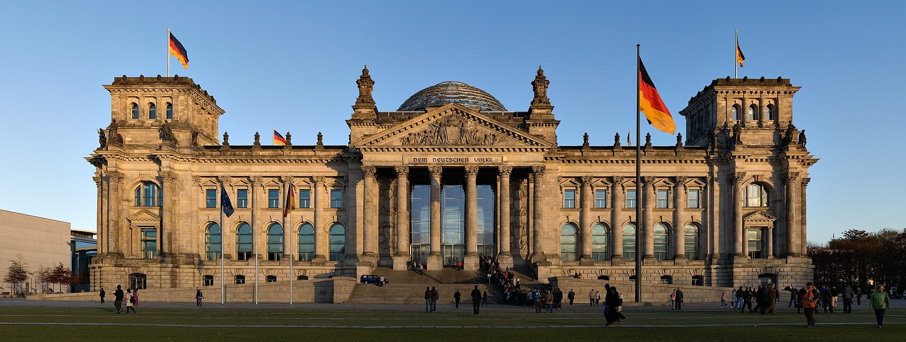

The Establishment of Diplomatic Relations Between Uzbekistan and Germany (1991–1996)
Germany was among the first Western countries to recognize independent Uzbekistan. From the recognition of 31 December 1991 to the formal relations of 6 March 1992 and the economic and cultural cooperation of the early years — the story of an important door the young state opened to Europe.

When Uzbekistan declared independence on 31 August 1991, the young state faced the task of building direct relations with the world. On the Western track, one of the key links in that process was its relationship with Germany — which became one of the European states to recognize Uzbekistan's independence earliest and to bring in investment and development aid (Source: German Federal Foreign Office — relations with Uzbekistan; Wikipedia — Germany–Uzbekistan relations).
Recognition and the establishment of formal relations
Germany recognized Uzbekistan's independence on 31 December 1991 — just four months after it was declared. Diplomatic relations were then formally established on 6 March 1992 through an exchange of notes. This date is confirmed both on the official list of Uzbekistan's Ministry of Foreign Affairs and on the German side. Recognition (December 1991) and the formal establishment of relations (March 1992) were two distinct steps, both documented (Source: Uzbekistan MFA — dates of diplomatic relations; German Federal Foreign Office).
Once relations were established, the two states opened embassies: Germany in Tashkent, and Uzbekistan first in Bonn, Germany's capital at the time (later in Berlin). Germany also hosts an Uzbek consulate in Frankfurt (Source: German Federal Foreign Office; Wikipedia — Germany–Uzbekistan relations).

Early high-level contacts
In the mid-1990s high-level contacts were set in motion. In April 1995 German Federal President Roman Herzog visited the region, including Uzbekistan; the German press framed it as a trip in support of democratic reform. In this period Uzbekistan was building a "multi-vector" foreign policy, balancing relations with Russia, the West, China, and its neighbours at the same time; the relationship with Germany held an important place in the Western dimension of that policy (Source: correctiv.org — Roman Herzog's April 1995 visit; Zenodo — Evolution of Germany–Uzbekistan relations).
The economic and legal foundation
The economic foundation of the relationship was laid in the earliest years. On 28 April 1993, in Bonn, the two states signed a Bilateral Investment Treaty on the promotion and mutual protection of investments — creating a legal guarantee for German companies investing in Uzbekistan. Later, on 7 September 1999, a double-taxation agreement was signed in Berlin, entering into force in 2001. In addition, Germany began channeling development aid to Uzbekistan through its technical-cooperation agency GTZ (now GIZ) and the KfW development bank (Source: WTI Electronic Database of Investment Treaties — Germany–Uzbekistan BIT; UN Treaty Series — Double-Taxation Agreement).
Uzbekistanis in Germany and the German diaspora
The relationship also had a distinct human dimension: Uzbekistan was home to a community of ethnic Germans deported there during the Soviet era. According to the 1989 Soviet census there were about 39,000 ethnic Germans in Uzbekistan. After independence, a large part of this community emigrated to their historic homeland under Germany's "Aussiedler" right-of-return law; today their number is far smaller. More broadly, between 1987 and 1997 about 1.58 million ethnic Germans emigrated from the former USSR to Germany. This migration became one of the human bridges between Germany and Uzbekistan (Source: FUEN/AGDM — the German minority in Uzbekistan; IZA — ethnic-German migration).
Cultural and academic cooperation
In the early years culture and education also became areas of cooperation. In 1993 the two states signed an agreement on cultural cooperation (which later fully entered into force in 2002). Germany's Goethe-Institut and the DAAD academic-exchange service began operating in Uzbekistan, opening opportunities for learning German and for student exchange. In this way Germany became one of Uzbekistan's cultural and academic doors to Europe (Source: Wikipedia — Germany–Uzbekistan relations; German Federal Foreign Office).
Its overall significance
The early relationship with Germany was an important achievement of independent Uzbekistan's foreign policy: the young state built direct relations with the European Union's leading economy and opened a path for investment and technology. The foundation laid in 1992 was strengthened in the decades that followed, and the two countries' relations have since risen to the level of a "strategic partnership". Germany's "early recognition" is repeatedly cited as the cornerstone of this long-term cooperation (Source: Zenodo — Evolution of Germany–Uzbekistan relations; German Federal Foreign Office).

Sources
- Uzbekistan MFA — dates of establishment of diplomatic relations
- German Federal Foreign Office (Auswärtiges Amt) — Germany and Uzbekistan
- Wikipedia — Germany–Uzbekistan relations
- WTI Electronic Database of Investment Treaties — Germany–Uzbekistan BIT (1993)
- UN Treaty Series — Germany–Uzbekistan Double-Taxation Agreement (1999)
- FUEN / AGDM — the German minority in Uzbekistan
- IZA — Ethnic German migration from the former Soviet Union
- Zenodo — Evolution of Germany–Uzbekistan relations